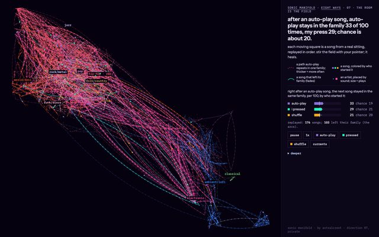
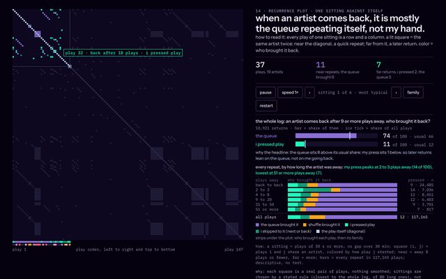
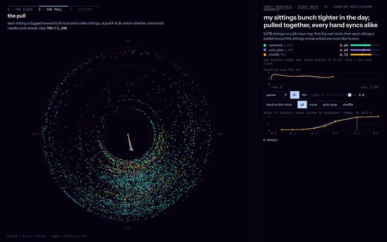
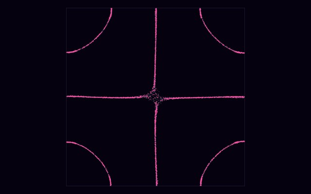
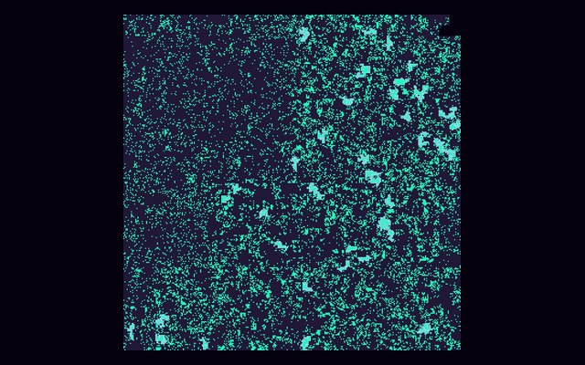
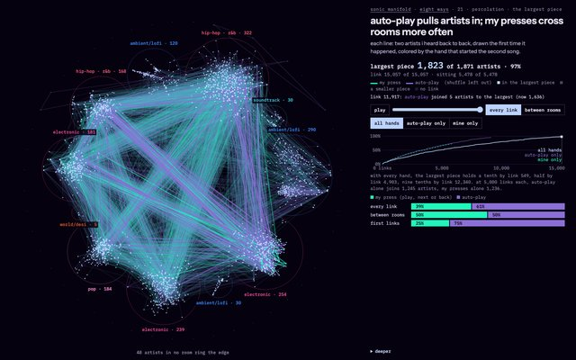
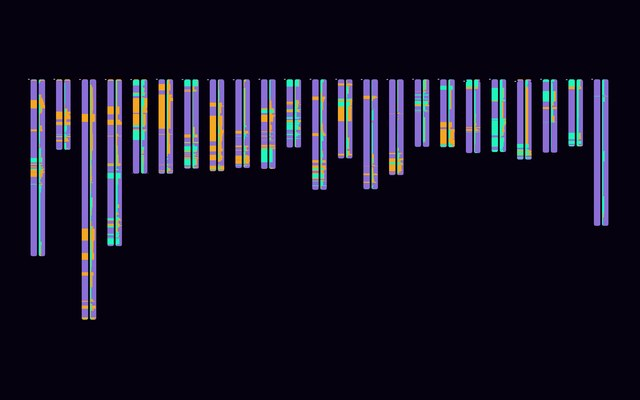
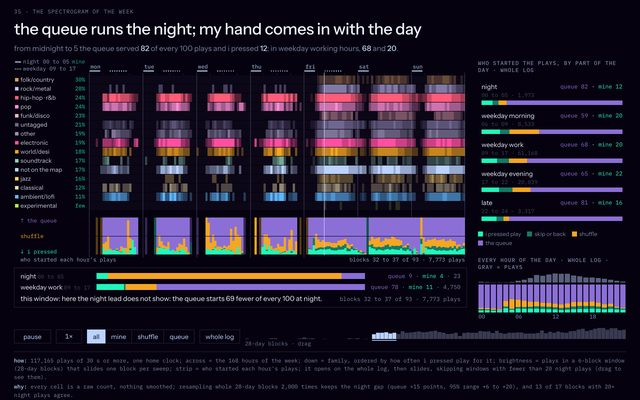

eight more ways to see the same plays
the same play log, drawn eight different ways. every page counts the plays again when it loads, and every one asks the same question: who started the song.
i pressedshuffleauto-play

07the room fieldleft alone, auto-play keeps the next song in the same family; i and shuffle stray
14recurrenceone sitting against itself: when an artist comes back, it is mostly auto-play
17coupled sittingseach sitting on a 24-hour ring: my sittings bunch tighter in the day
18chladni platea plate of sand that re-tunes when the genre changes; auto-play holds one longest
19the hilbert foldevery play folded onto one square: my presses land in clumps a random deal lacks
21percolationartists heard back to back: auto-play pulls them in, my presses cross rooms
30the karyotypemy 23 most-played artists as banded bars, one 28-day block at a time
35spectrogram of the weekthe week as a spectrogram: auto-play runs the night, my press comes in with the day
how: one play log (plays of 30 s or more), eight instruments borrowed from physics, biology and sound; each page carries its own how and why line.